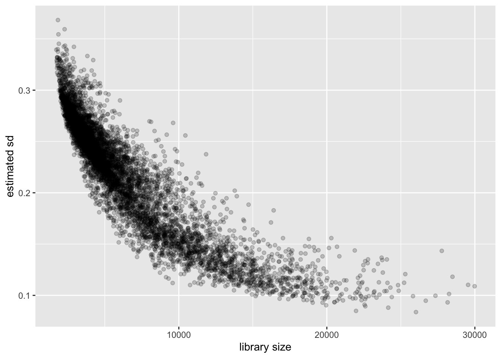
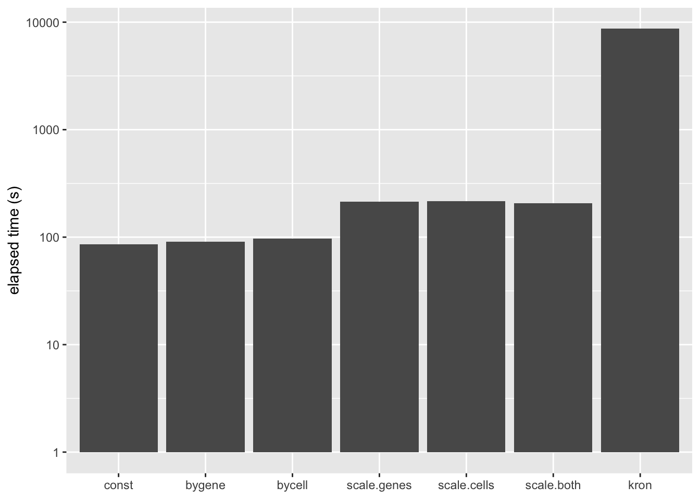
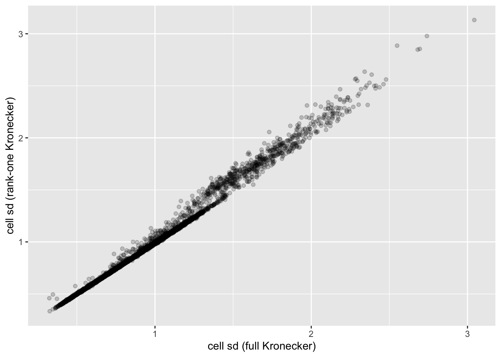
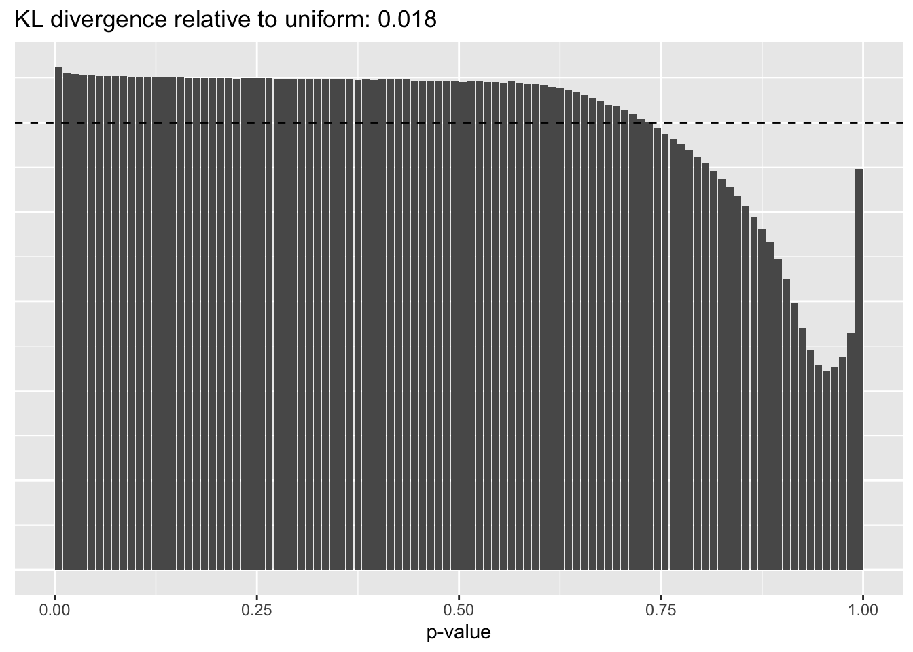
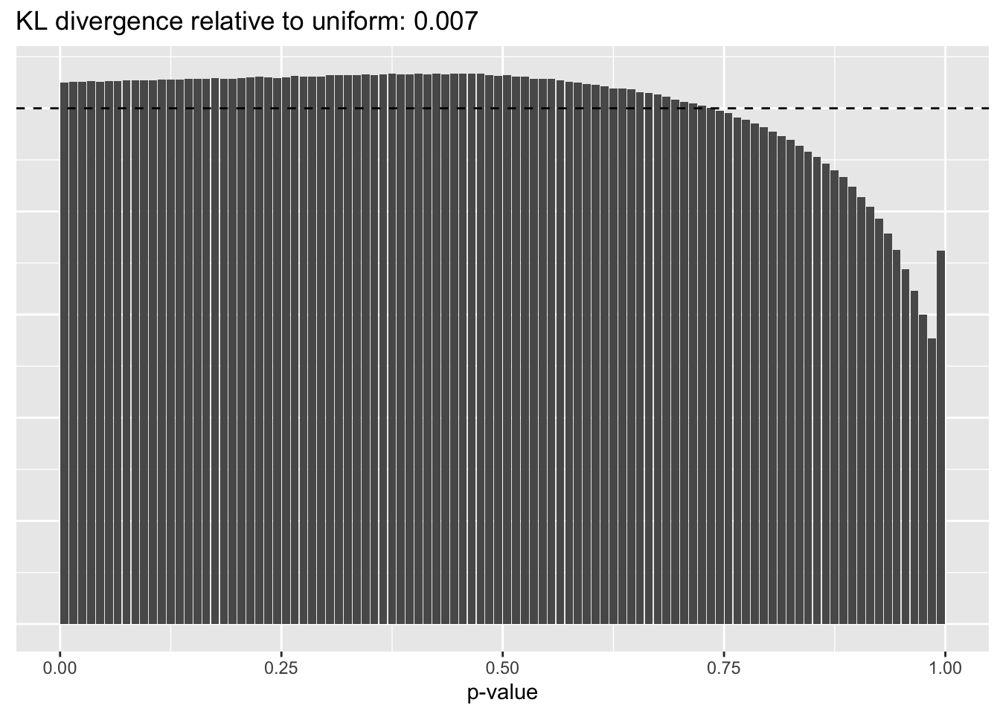
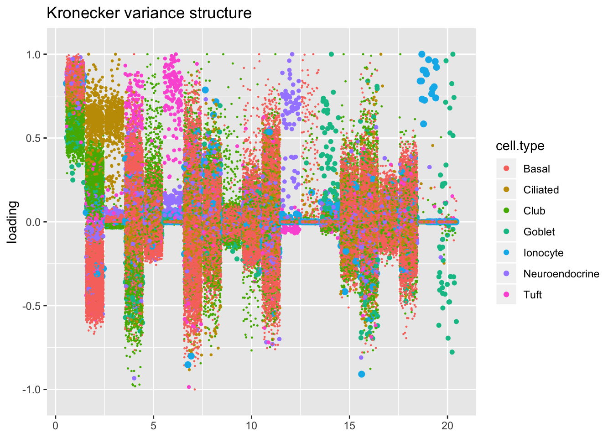
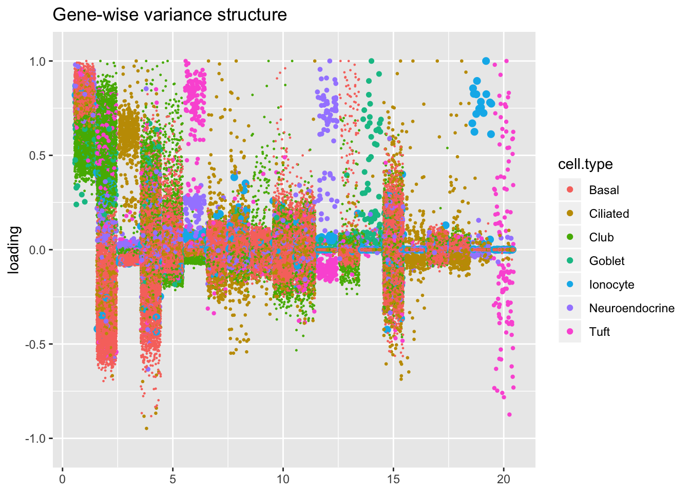
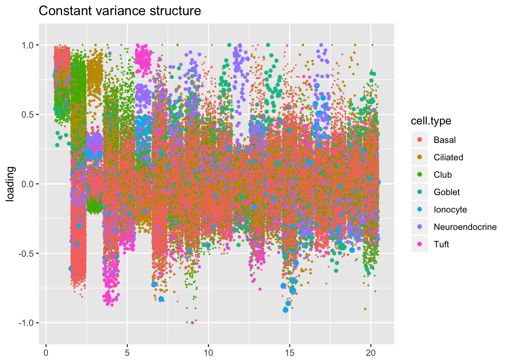

Last updated: 2019-09-04
Checks: 6 0
Knit directory: scFLASH/
This reproducible R Markdown analysis was created with workflowr (version 1.2.0). The Report tab describes the reproducibility checks that were applied when the results were created. The Past versions tab lists the development history.
Great! Since the R Markdown file has been committed to the Git repository, you know the exact version of the code that produced these results.
Great job! The global environment was empty. Objects defined in the global environment can affect the analysis in your R Markdown file in unknown ways. For reproduciblity it’s best to always run the code in an empty environment.
The command set.seed(20181103) was run prior to running the code in the R Markdown file. Setting a seed ensures that any results that rely on randomness, e.g. subsampling or permutations, are reproducible.
Great job! Recording the operating system, R version, and package versions is critical for reproducibility.
Nice! There were no cached chunks for this analysis, so you can be confident that you successfully produced the results during this run.
Great! You are using Git for version control. Tracking code development and connecting the code version to the results is critical for reproducibility. The version displayed above was the version of the Git repository at the time these results were generated.
Note that you need to be careful to ensure that all relevant files for the analysis have been committed to Git prior to generating the results (you can use wflow_publish or wflow_git_commit). workflowr only checks the R Markdown file, but you know if there are other scripts or data files that it depends on. Below is the status of the Git repository when the results were generated:
Ignored files:
Ignored: .DS_Store
Ignored: .Rhistory
Ignored: .Rproj.user/
Ignored: code/initialization/
Ignored: data/droplet.rds
Ignored: output/backfit/
Ignored: output/prior_type/
Ignored: output/size_factors/
Ignored: output/var_type/
Untracked files:
Untracked: analysis/NBapprox.Rmd
Untracked: analysis/deleted.Rmd
Untracked: analysis/trachea4.Rmd
Untracked: code/missing_data.R
Untracked: code/pseudocount/
Untracked: code/pseudocounts.R
Untracked: code/trachea4.R
Untracked: data/Ensembl2Reactome.txt
Untracked: data/hard_bimodal1.txt
Untracked: data/hard_bimodal2.txt
Untracked: data/hard_bimodal3.txt
Untracked: data/mus_pathways.rds
Untracked: docs/figure/pseudocount2.Rmd/
Untracked: output/pseudocount/
Unstaged changes:
Modified: analysis/index.Rmd
Modified: analysis/pseudocount.Rmd
Modified: code/sc_comparisons.R
Modified: code/utils.R
Note that any generated files, e.g. HTML, png, CSS, etc., are not included in this status report because it is ok for generated content to have uncommitted changes.
These are the previous versions of the R Markdown and HTML files. If you’ve configured a remote Git repository (see ?wflow_git_remote), click on the hyperlinks in the table below to view them.
| File | Version | Author | Date | Message |
|---|---|---|---|---|
| Rmd | b8fe277 | Jason Willwerscheid | 2019-09-04 | wflow_publish(“analysis/var_type.Rmd”) |
| html | 9c8fdf9 | Jason Willwerscheid | 2019-09-03 | Build site. |
| Rmd | 723ee88 | Jason Willwerscheid | 2019-09-03 | wflow_publish(“analysis/var_type.Rmd”) |
| html | 851baf8 | Jason Willwerscheid | 2019-09-01 | Build site. |
| Rmd | fc78232 | Jason Willwerscheid | 2019-09-01 | wflow_publish(c(“analysis/backfit.Rmd”, “analysis/var_type.Rmd”)) |
| html | e2d99bb | Jason Willwerscheid | 2019-08-31 | Build site. |
| Rmd | f608bb0 | Jason Willwerscheid | 2019-08-31 | wflow_publish(“analysis/var_type.Rmd”) |
| html | 26d29a3 | Jason Willwerscheid | 2019-08-16 | Build site. |
| Rmd | bd61d1a | Jason Willwerscheid | 2019-08-16 | wflow_publish(“analysis/var_type.Rmd”) |
Recall that EBMF fits the model \[ Y_{ij} = \sum_k L_{ik}F_{jk} + E_{ij}, \] where \[ E_{ij} \sim N(0, \sigma^2_{ij}) \] By assuming that the matrix \(\Sigma\) has a given structure, one can estimate the \(\sigma_{ij}^2\)s via maximum likelihood. In flashier, one can assume:
The question, then, is how much the “errors” in the transformed data matrix \(Y\) vary from gene to gene and from cell to cell, and whether accounting for this heteroskedasticity makes any difference to the quality of the factors obtained via flashier.
In this analysis, I’ll argue that accounting for differences in variability among both genes and cells is crucial, but I’ll advocate for a quick approximation to a Kronecker variance structure (which I’ll describe shortly) rather than a full Kronecker fit.
All fits were produced by adding 20 “greedy” factors to the Montoro et al. droplet dataset. The code can be viewed here.
source("./code/utils.R")
droplet <- readRDS("./data/droplet.rds")
droplet <- preprocess.droplet(droplet)
res <- readRDS("./output/var_type/vartype_fits.rds")I calculate the “sparsity” of a gene as the proportion of cells that have a nonzero number of transcripts for that gene. (I prefer this measure to, say, mean expression because it doesn’t depend on how size factors are calculated.)
There is a very clear relationship between sparsity and gene-wise precision: in general, sparser genes yield more precise estimates. This is probably not surprising. If a gene is very sparse, then most estimates will be close to zero with high precision.
The reversal of this trend for the least sparse genes is more surprising. I think that this is at least partially an effect of library-size normalization: since library size is strongly correlated with the expression levels of the most highly expressed genes, the variability of the least sparse genes can be (artificially) reduced by scaling. I will investigate the effects of using size factors to normalize counts in a subsequent analysis.
gene.df <- data.frame(sparsity = droplet$gene.sparsity,
genewise.sd = res$bygene$fl$residuals.sd,
kronecker.sd = res$kron$fl$residuals.sd[[1]],
approx.sd = res$scale.both$gene.prescaling.factors)
ggplot(gene.df, aes(x = sparsity, y = genewise.sd)) +
geom_point(alpha = 0.2) +
labs(y = "estimated sd")
Again the relationship is clear: a larger library size yields higher precision. This is to be expected, since a larger library size essentially means that we have more and better information about a cell.
cell.df <- data.frame(library.size = droplet$lib.size,
cellwise.sd = res$bycell$fl$residuals.sd,
kronecker.sd = res$kron$fl$residuals.sd[[2]],
approx.sd = res$scale.both$cell.prescaling.factors)
ggplot(cell.df, aes(x = library.size, y = cellwise.sd)) +
geom_point(alpha = 0.2) +
labs(x = "library size", y = "estimated sd")
A Kronecker variance structure allows us to account for both gene-wise and cell-wise variance, but it has the disadvantage of being much slower to fit.
To get most of the benefits of the Kronecker variance structure without sacrificing too much in performance, notice that the Kronecker model \[ Y_{ij} = \sum_k L_{ik}F_{jk} + E_{ij},\ E_{ij} \sim N(0, \sigma_i^{2(1)} \sigma_j^{2(2)}) \] is nearly equivalent to the model \[ Y_{ij} / \sigma_j^{(2)} = \sum_k L_{ik}\frac{F_{jk}}{\sigma_j^{(2)}} + E_{ij},\ E_{ij} \sim N(0, \sigma_i^{2(1)}), \] so that, if one has cell-wise variance estimates, one can simply scale the columns in advance and then fit a gene-wise variance structure.
The difference is that the meaning of the prior on \(F\) (which I have ignored until now) changes. Instead of fitting empirical Bayes priors \[ F_{jk} \sim g_k^{(f)}, \] the pre-scaling approach fits the “p-value prior” \[ \frac{F_{jk}}{\sigma_j^{(2)}} \sim g_k^{(f)}. \] Similarly, by scaling the rows in advance, it is possible to fit \[ \frac{L_{ik}}{\sigma_i^{(1)}} \sim g_k^{(\ell)}. \] These observations suggest three possible ways of proceeding: scaling the columns in advance and fitting gene-wise variance estimates, scaling the rows and fitting cell-wise estimates, and scaling both and fitting gene-wise estimates. (One could also scale both and fit cell-wise estimates, but I’m convinced that getting variance estimates right for genes is more important than for cells: see below.) All approaches have the important advantage of being able to account for heteroskedasticity among both genes and cells, but they require nearly as little time to fit as the simpler cell- and gene-wise approaches (some additional time is needed to obtain the initial scaling factors):
t.df <- data.frame(elapsed.time = sapply(res, `[[`, "elapsed.time"))
t.df$fit <- names(res)
the.limits <- c("const", "bygene", "bycell",
"scale.genes", "scale.cells", "scale.both", "kron")
ggplot(t.df, aes(x = fit, y = elapsed.time)) +
geom_bar(stat = "identity") +
scale_x_discrete(limits = the.limits) +
scale_y_log10() +
labs(x = NULL, y = "elapsed time (s)")
In this analysis, I fit a rank-one Kronecker model to get initial gene- and cell-wise variance estimates. Indeed, these estimates track those obtained using a full Kronecker fit fairly closely (note that the estimates can all be scaled by a constant without changing the model, so I’m looking for a linear relationship here rather than the relationship \(y = x\)).
ggplot(gene.df, aes(x = kronecker.sd, y = approx.sd)) +
geom_point(alpha = 0.2) +
labs(x = "gene sd (full Kronecker)", y = "gene sd (rank-one Kronecker)")
ggplot(cell.df, aes(x = kronecker.sd, y = approx.sd)) +
geom_point(alpha = 0.2) +
labs(x = "cell sd (full Kronecker)", y = "cell sd (rank-one Kronecker)")
A comparison of ELBOs suggests that accounting for heteroskedasticity among genes is more important than accounting for differences in variability among cells.
n.genes <- nrow(droplet$data)
n.cells <- ncol(droplet$data)
elbo <- sapply(res, function(x) x$fl$elbo + x$elbo.adj)
addl.par <- c(n.cells - 1, n.genes - 1, n.genes, n.genes, n.cells, n.cells)
nested.df <- data.frame(comparison = c("constant -> cell-wise",
"constant -> gene-wise",
"cell-wise -> kronecker",
"cell-wise -> pre-scale genes",
"gene-wise -> kronecker",
"gene-wise -> pre-scale cells"),
addl.par = addl.par,
elbo.per.par = (round(c(elbo["bycell"] - elbo["const"],
elbo["bygene"] - elbo["const"],
elbo["kron"] - elbo["bycell"],
elbo["scale.genes"] - elbo["bycell"],
elbo["kron"] - elbo["bygene"],
elbo["scale.cells"] - elbo["bygene"])
/ addl.par)))
col.names = c("Nested models",
"Number of additional parameters",
"Improvement in ELBO per parameter")
knitr::kable(nested.df[1:2, ], col.names = col.names)| Nested models | Number of additional parameters | Improvement in ELBO per parameter |
|---|---|---|
| constant -> cell-wise | 7190 | 893 |
| constant -> gene-wise | 14480 | 3644 |
A comparison of the Kronecker fit and pre-scaling approaches (being careful to adjust the ELBO of the latter to account for the scaling of the data) confirms that the quality of the two is similar.
knitr::kable(nested.df[3:6, ], col.names = col.names, row.names = FALSE)| Nested models | Number of additional parameters | Improvement in ELBO per parameter |
|---|---|---|
| cell-wise -> kronecker | 14481 | 3814 |
| cell-wise -> pre-scale genes | 14481 | 3789 |
| gene-wise -> kronecker | 7191 | 1236 |
| gene-wise -> pre-scale cells | 7191 | 1227 |
In fact, pre-scaling both genes and cells yields the best ELBO among all fits.
elbo.df <- data.frame(fit = names(elbo), elbo = elbo)
ggplot(subset(elbo.df, elbo > 40000000), aes(x = fit, y = elbo)) +
geom_point() +
scale_x_discrete(limits = c("scale.genes", "scale.cells", "scale.both", "kron")) +
labs(x = NULL, y = "ELBO")
A comparison of implied \(p\)-value distributions (as described here) offers additional evidence for the superiority of the gene-wise fit relative to the constant one. The fits that account for heteroskedasticity among both genes and cells (which I will refer to as “Kronecker-like” fits) show a bit further improvement.
KL <- sapply(lapply(res, `[[`, "p.vals"), `[[`, "KL.divergence")
KL.df <- data.frame(fit = names(KL), KL = KL)
ggplot(KL.df, aes(x = fit, y = KL)) +
geom_bar(stat = "identity") +
scale_x_discrete(limits = the.limits) +
labs(x = NULL, y = "KL divergence relative to uniform")
plot.p.vals(res$const$p.vals)
plot.p.vals(res$bygene$p.vals)
Since the change-of-variables ELBO adjustments are not entirely reliable, it’s useful to compare the log likelihoods of the implied discrete distributions as well.
From this perspective, the Kronecker fit does best, followed by the Kronecker-like fit that pre-scales cells. I’m inclined to believe these statistics more than the ELBOs. In effect, since sparse genes have very small residual standard deviations, a \(p\)-value prior on genes would imply that nonzero loadings are expected to be much larger for sparse genes than for genes that are highly expressed. A \(p\)-value prior on cells doesn’t make much sense either, but the range of residual standard deviations for cells is much smaller, so there’s less of a difference between the \(p\)-value prior and the usual prior.
llik <- sapply(lapply(res, `[[`, "p.vals"), `[[`, "llik")
llik.df <- data.frame(fit = names(llik), llik = llik)
ggplot(llik.df, aes(x = fit, y = llik)) +
geom_point() +
scale_x_discrete(limits = c("const", "bycell", "bygene", "kron",
"scale.genes", "scale.cells", "scale.both")) +
labs(x = NULL, y = "Log likelihood of implied distribution")
| Version | Author | Date |
|---|---|---|
| 9c8fdf9 | Jason Willwerscheid | 2019-09-03 |
I plot the Kronecker factors in decreasing order of proportion of variance explained, and I attempt to arrange the factors from the other fits so that similar factors are aligned with one another. In particular, the plots visually confirm that the Kronecker-like factors are qualitatively very similar to the Kronecker factors (with the exception of factor 18).
At first, it seems like the gene-wise fit yields sparser factors than the Kronecker fit, but on closer inspection it looks to be producing a lot of factors that are driven by a few outlying ciliated cells, while the Kronecker fit yields more factors that identify substructure within the much larger population of basal and club cells.
The constant variance structure is obviously unsuitable.
kron.order <- order(res$kron$fl$pve, decreasing = TRUE)
plot.factors(res$kron,
droplet$cell.type,
kron.order,
title = "Kronecker variance structure")
kron.v.prescale <- compare.factors(res$kron$fl, res$scale.cells$fl)
plot.factors(res$scale.cells,
droplet$cell.type,
kron.v.prescale$fl2.k[kron.order],
title = "Kronecker-like (pre-scale cells)")
kron.v.bygene <- compare.factors(res$kron$fl, res$bygene$fl)
plot.factors(res$bygene,
droplet$cell.type,
kron.v.bygene$fl2.k[kron.order],
title = "Gene-wise variance structure")
kron.v.const <- compare.factors(res$kron$fl, res$const$fl)
plot.factors(res$const,
droplet$cell.type,
kron.v.const$fl2.k[kron.order],
title = "Constant variance structure")
sessionInfo()#> R version 3.5.3 (2019-03-11)
#> Platform: x86_64-apple-darwin15.6.0 (64-bit)
#> Running under: macOS Mojave 10.14.6
#>
#> Matrix products: default
#> BLAS: /Library/Frameworks/R.framework/Versions/3.5/Resources/lib/libRblas.0.dylib
#> LAPACK: /Library/Frameworks/R.framework/Versions/3.5/Resources/lib/libRlapack.dylib
#>
#> locale:
#> [1] en_US.UTF-8/en_US.UTF-8/en_US.UTF-8/C/en_US.UTF-8/en_US.UTF-8
#>
#> attached base packages:
#> [1] stats graphics grDevices utils datasets methods base
#>
#> other attached packages:
#> [1] flashier_0.1.15 ggplot2_3.2.0 Matrix_1.2-15
#>
#> loaded via a namespace (and not attached):
#> [1] Rcpp_1.0.1 plyr_1.8.4 highr_0.8
#> [4] compiler_3.5.3 pillar_1.3.1 git2r_0.25.2
#> [7] workflowr_1.2.0 iterators_1.0.10 tools_3.5.3
#> [10] digest_0.6.18 evaluate_0.13 tibble_2.1.1
#> [13] gtable_0.3.0 lattice_0.20-38 pkgconfig_2.0.2
#> [16] rlang_0.3.1 foreach_1.4.4 parallel_3.5.3
#> [19] yaml_2.2.0 ebnm_0.1-24 xfun_0.6
#> [22] withr_2.1.2 stringr_1.4.0 dplyr_0.8.0.1
#> [25] knitr_1.22 fs_1.2.7 rprojroot_1.3-2
#> [28] grid_3.5.3 tidyselect_0.2.5 glue_1.3.1
#> [31] R6_2.4.0 rmarkdown_1.12 mixsqp_0.1-119
#> [34] reshape2_1.4.3 ashr_2.2-38 purrr_0.3.2
#> [37] magrittr_1.5 whisker_0.3-2 MASS_7.3-51.1
#> [40] codetools_0.2-16 backports_1.1.3 scales_1.0.0
#> [43] htmltools_0.3.6 assertthat_0.2.1 colorspace_1.4-1
#> [46] labeling_0.3 stringi_1.4.3 pscl_1.5.2
#> [49] doParallel_1.0.14 lazyeval_0.2.2 munsell_0.5.0
#> [52] truncnorm_1.0-8 SQUAREM_2017.10-1 crayon_1.3.4